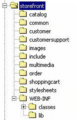

Struts 1.1的一个新特性是应用模块的概念。应用模块允许将单个Struts应用划分成几个模块，每个模块有自己的Struts配置文件，JSP页面，Action等等。这个新特性是为了解决大中型的开发队伍抱怨最多的一个问题，即为了更好的支持并行开发允许多个配置文件而不是单个配置文件。显然，当很多开发人员一起参加一个项目时，单个的Struts配置文件很容易引起资源冲突。应用模块允许Struts按照功能要求进行划分，许多情况已经证明这样更贴近实际。例如，假设我们要开发一个典型的商店应用程序。可以将组成部分划分成模块比如catalog（商品目录）, customer（顾客）, customer service（顾客服务）, order（订单）等。每个模块可以分布到不同的目录下，这样各部分的资源很容易定位，有助于开发和部署。下图显示了该应用的目录结构。

一个典型的商店应用程序的目录结构
注：如果你无需将项目划分成多个模块，Struts框架支持一个缺省的应用模块。这就使得应用程序也可以在1.0版本下创建，具有可移植性，因为应用程序会自动作为缺省的应用模块。
为了使用多应用模块功能，必须执行以下几个准备步骤：
· 为每个应用模块创建独立的Struts配置文件。
· 配置Web 部署描述符Web.xml文件。
· 使用org.apache.struts.actions.SwitchAction 来实现程序在模块之间的跳转.
创建独立的Struts配置文件
每个Struts应用模块必须拥有自己的配置文件。允许创建自己的独立于其他模块的Action，ActionForm，异常处理甚至更多。继续以上面的商店应用程序为例，我们可以创建以下的配置文件：一个文件名为struts-config-catalog.xml，包含catalog（商品目录）、items(商品清单)、和其它与库存相关的功能的配置信息；另一个文件名为struts- config-order.xml, 包含对order（订
单）和order tracking（订单跟踪）的设置。第三个配置文件是struts-config.xml,其中含有属于缺省的应用模块中的一般性的功能。
在为每个应用模块创建独立的配置文件之后，我们就有可能需要调用不同的模块中Action。为此必须使用Struts框架提供的SwitchAction类。Struts 会自动将应用模块的名字添加到URL,就如Struts 自动添加应用程序的名字加到URL一样。应用模块是对框架的一个新的扩充，有助于进行并行的团队开发。如果你的团队很小那就没必要用到这个特性，不必进行模块化。当然，就算是只有一个模块，系统还是一样的运作。